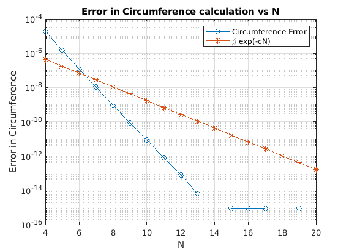

clear all
close all
a = 0; b = pi/2;
A = 1; B = 0.5;
k = sqrt(1 - (B/A)^2);
f = @(x) 4*A*(sqrt(1 - k^2*(sin(x)).^2));
Tex = 4.84422411027383809921;
Error = [];
C = [];
N = [];
for n = 4:20
N = [N,n];
Tc = trapezoidal(a,b,f,n);
C = [C,Tc];
error = abs(Tc-Tex);
Error = [Error,error];
end
semilogy(N,Error,'-o'); grid on;
title('Error in Circumference calculation vs N');
xlabel('N'); ylabel('Error in Circumference');
beta = exp(log(Error(1)))
Errorn = [];
Nn = [];
for n = 4:13
Nn = [Nn,n];
Tcn = trapezoidal(a,b,f,n);
errorn = abs(Tcn-Tex);
Errorn = [Errorn,errorn];
end
c1 = polyfit(log(Nn),log(log(Errorn)),1); c=c1(1)
hold on
En = @(N) beta*exp(-c*N);
semilogy(N,En(N),'-*');
legend('Circumference Error','\beta exp(-cN)')
slope = polyfit(log(N),log(log(En(N))),1)
function [T] = trapezoidal(a,b,f,n)
h = (b-a)/n;
xe = linspace(a,b,n+1);
fe = f(xe);
T = (h/2)*(fe(1) + 2*sum(fe(2:end-1)) + fe(end));
end
beta =
1.7915e-05
c =
0.9255
slope =
0.4466 - 0.0000i 2.0056 + 3.1416i
